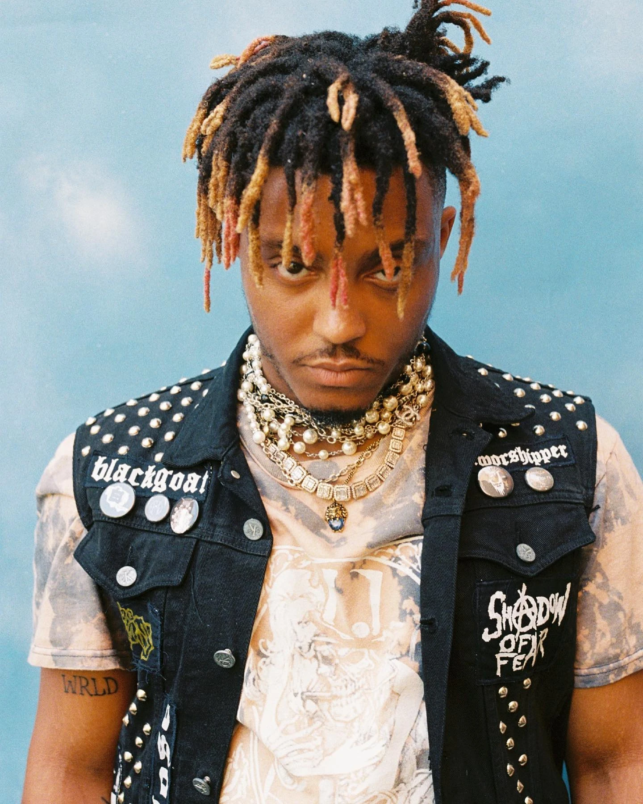
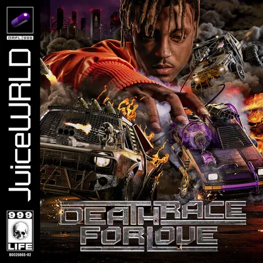

Jarad Anthony Higgins (December 2, 1998 – December 8, 2019), professionally known as Juice WRLD, was a multi-platinum American rapper, singer, and songwriter. Hailing from Chicago, he was a pioneering figure in the 2010s "emo rap" and SoundCloud rap scenes, celebrated for his introspective lyrics, genre-bending style, and legendary freestyling abilities.
Death Race for Love is the second studio album by American rapper Juice Wrld and the last to be released during his lifetime. It was released on March 8, 2019, by Grade A Productions and Interscope Records. The production on the album was handled by multiple producers including Nick Mira, Boi-1da, Hit-Boy, No I.D., Frank Dukes, and Tommy Brown, among others. The album features guest appearances from Brent Faiyaz, Rvssian, Clever, and Young Thug. The bonus track edition features the 2019 single "Bandit", with an appearance from rapper YoungBoy Never Broke Again. Death Race for Love includes the Nick Mira-produced lead single, "Robbery", which was released on February 13, and the Purps-produced "Hear Me Calling", which was released on March 1. While the album received a generally lukewarm response from critics, it was a commercial success. It debuted at number one on the US Billboard 200, earning 165,000 album-equivalent units in its first week. It became Juice Wrld's first US number-one album. In October 2021, the album was certified double platinum by the Recording Industry Association of America.

March 8, 2019
1 Hour, 15 Minutes
Grade A Productions, Interscope Records
1. Empty
2. Maze
3. HeMotions
4. Demonz (Interlude)(feat. Brent Faiyaz)
5. Fast
6. Hear Me Calling
7. Big
8. Robbery
9. Flaws And Sins
10. Feeling
11. Bandit
12. Syphillis
13. Who Shot Cupid?
14. Ring Ring (feat. Clever)
15. Desire
16. Out My Way
17. The Bees Knees
18. ON GOD (feat. Young Thug)
19. 10 Feet
20. Won't Let Go
21. She's The One
22. Rider
23. Make Believe